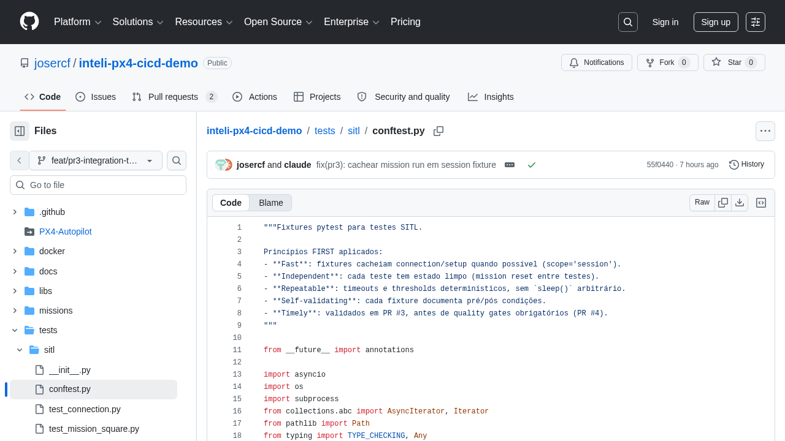
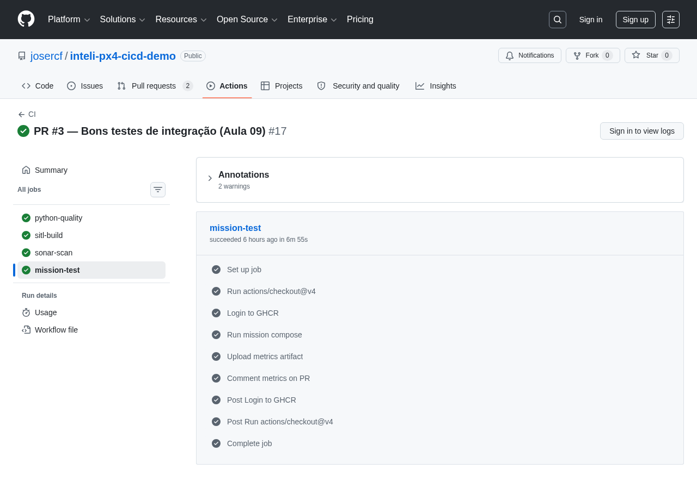
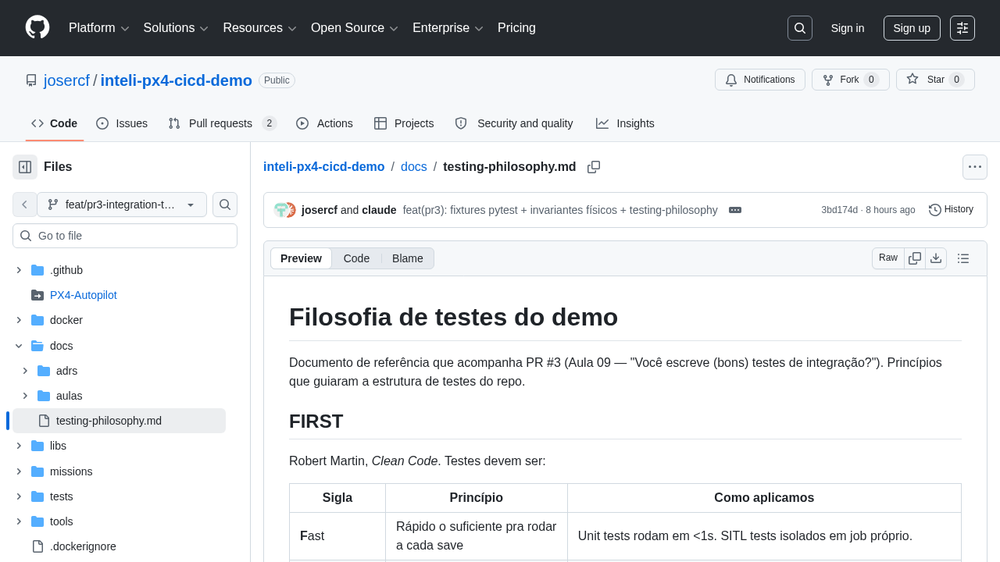

Métricas no PR vocês já têm. Mas que tipo de teste produz métricas confiáveis? Hoje a gente disseca a suite SITL do demo PR #3 — fixtures, invariantes, antipatterns.
Aula 08 fechou com tabela de métricas no PR. Hoje atacamos a base: quão confiáveis são esses testes que produzem essas métricas? FIRST + Trofeu + 4 antipatterns. Walkthrough do PR #3.
| Bloco | Atividade | Duração |
|---|---|---|
| 10h00, Daily Time | Check-in: comentário de métricas no PR ajudou a revisar? | 15 min |
| 10h15, Bloco 1 | O que é (bom) teste de integração — FIRST, pirâmide vs trofeu | 25 min |
| 10h40, Bloco 2 | Antipatterns que matam suite — bad vs good code lado a lado | 30 min |
| 11h10, Bloco 3 | Walkthrough do PR #3 — conftest, invariantes físicos, parametrização | 25 min |
| 11h35, Bloco 4 | Hands-on: identifique antipattern num teste ruim | 15 min |
| 11h50, Fechamento | Quiz, checklist, auto-estudo Aula 10 | 10 min |
Vocês conseguiram interpretar o comentário de métricas no PR do grupo? Identificaram algo "estranho"? Quem teve teste flaky (passou às vezes, falhou outras) na Sprint até agora?
Ao fim desta aula, cada grupo identifica quando um teste é "bom" pelos critérios FIRST, escolhe entre forma pirâmide ou trofeu pra seu contexto, reconhece os 4 antipatterns mais comuns, e sabe estruturar fixtures pytest reutilizáveis.
Aplicar FIRST (Fast, Independent, Repeatable, Self-validating, Timely) num teste qualquer e identificar pontos de melhoria.
Decidir entre pirâmide e trofeu com base no contexto do projeto (firmware, web, batch). Não há resposta única.
Identificar antipatterns: sleep arbitrário, estado compartilhado, asserções sem diagnóstico, baseline vs invariante misturados.
Escrever fixture pytest com escopo correto (session/function), teardown explícito, e parametrização que vale a pena.
PR #2 deu pipeline com missão real e métricas no PR. Mas se vocês olharem a suite SITL ANTES do PR #3, ela tem vários problemas que só apareceriam quando o repo crescer. Hoje arrumamos isso pré-emptivamente.
conftest.py centraliza fixtures (DRY)latest_ulog_path fixture reutilizávelmavsdk_system com teardown land()Refactor de testes raramente é urgente. Sempre é importante. Quando vira urgência, é porque a suite já está flaky e atrasando entregas.
Critérios objetivos pra avaliar um teste em isolado, e teorias sobre como distribuir tipos de teste numa suite.
Robert Martin, Clean Code. 5 atributos que um teste decente tem. Aplique em qualquer teste do seu repo — se algum cai, é débito técnico que vai cobrar juros.
Rápido o suficiente pra rodar a cada save. Unit: <1s. Integration: aceita ~minutos, mas isolar em job próprio.
Ordem não importa. Cada teste limpa o que sujou. Sem globais mutáveis.
Mesmo input → mesmo resultado. Sem sleep() arbitrário. Espera por estado, não por tempo.
Pass/fail binário. Sem inspeção manual. Mensagem de falha explica o quê e por quê.
Escrito junto (ou antes) do código. Não 6 meses depois "quando der tempo".
Cada um dos 5 está documentado no header do conftest.py do PR #3 — qual decisão da fixture corresponde a qual letra. Vide auto-estudo: docs/testing-philosophy.md tem a tabela completa.
Auto-estudo cobriu Fowler (2012, Pirâmide) e Dodds (2018, Trofeu). Recap visual + nossa escolha.
Lógica: testes integration/E2E são caros, lentos, flaky. Concentre cobertura em unit. Privilegia velocidade de feedback.
Lógica: muito mock em unit testa só seu mock. Integration testa o sistema. Privilegia confiança real.
Lógica pura em firmware (geometria, conversões) é pouca. Valor real está na composição (PX4 + simulador + controle). Pirâmide forçaria muito mock que não detecta nada. Trofeu reconhece isso. Vide docs/testing-philosophy.md seção "Pirâmide vs Trofeu".
4 erros que toda suite "envelhecida" tem. Cada um com bad vs good lado a lado.
sleep() arbitrárioAdicionar sleep(5) "pra dar tempo" é o pecado original do teste flaky. Funciona local, quebra em CI lento, quebra em runner sobrecarregado, quebra em Friday afternoon.
def test_arm_and_takeoff():
drone.arm()
time.sleep(5) # "tempo pra armar"
drone.takeoff()
time.sleep(10) # "tempo pra subir"
assert drone.altitude > 5
async def test_arm_and_takeoff(mavsdk_system):
await _wait_armable(mavsdk_system) # estado
await _arm_with_retry(mavsdk_system)
await mavsdk_system.action.takeoff()
await _wait_altitude(mavsdk_system, target=5.0, timeout=30)
# asserção implícita: chegou a 5m sem timeout
Espere por estado observável (telemetria, log, exit code), nunca por tempo. Use timeout duro como rede de segurança — não como evento esperado.
DRONE = None # global mutável
def test_arm():
global DRONE
DRONE = create_system()
DRONE.arm()
def test_takeoff():
DRONE.takeoff() # depende de test_arm
# rodar primeiro
@pytest.fixture
def armed_drone(mavsdk_system):
asyncio.run(_arm_with_retry(mavsdk_system))
yield mavsdk_system
# teardown: land + disarm
asyncio.run(mavsdk_system.action.land())
def test_takeoff(armed_drone):
# estado fresh, sem ordem
armed_drone.takeoff()
Se rodar pytest --randomly-order quebra sua suite, você tem estado compartilhado. Bom teste passa em qualquer ordem.
def test_max_accel():
metrics = run_mission()
assert metrics["max_accel"] < 15
# quando falha:
# AssertionError: assert 17.3 < 15
# ...e agora? que regra é essa? por que 15?
def test_max_accel():
metrics = run_mission()
assert metrics["max_accel"] < 15.0, (
f"violação de invariante: aceleração máxima "
f"{metrics['max_accel']:.2f} m/s² excede limite "
f"mecânico de 15 m/s² (nominal x500)"
)
Em 3 meses, quando esse teste falhar, o dev (talvez você mesmo) não vai lembrar por que 15. A mensagem é o link entre regra física e código. Toda asserção do test_physical_invariants.py do PR #3 segue esse padrão.
Dois tipos de asserção parecidos, regras de mudança totalmente diferentes:
test_metrics_within_baseline_thresholdstest_physical_invariants.pyMisturar = baseline ficar "imutável" por confusão (ninguém ajusta com medo de quebrar invariante), OU invariante virar "mudável" e perder o papel de gate de segurança. PR #3 separa em arquivos distintos.
conftest.py, test_physical_invariants.py, parametrização, testing-philosophy.md.
conftest.py — coração do PR #3@pytest.fixture(scope="session")
def repo_root() -> Path:
return Path(__file__).resolve().parents[2]
@pytest.fixture
async def mavsdk_system(mavsdk_server_host, mavsdk_server_port):
"""MAVSDK conectado e armable. Teardown: best-effort land."""
drone = System(mavsdk_server_address=mavsdk_server_host,
port=mavsdk_server_port)
await drone.connect(system_address="udpin://0.0.0.0:14540")
await _wait_connection(drone, timeout_s=30)
await _wait_armable(drone, timeout_s=90)
yield drone
with contextlib.suppress(Exception):
await asyncio.wait_for(drone.action.land(), timeout=10)
@pytest.fixture
def run_mission(repo_root):
"""Factory: retorna função que executa missão arbitrária."""
def _factory(yaml_path, timeout_s=300):
result = subprocess.run([...], timeout=timeout_s)
if result.returncode != 0:
pytest.fail(f"run_mission falhou ({result.stderr[-1500:]})")
return result
return _factoryDecisões de scope
repo_root, URLs, ports: imutáveis durante a run.mavsdk_system: cada teste tem drone limpo.run_mission: 1 fixture vira N testes com missões diferentes.
test_physical_invariants.py + parametrizaçãoMISSIONS = [
pytest.param("missions/square_50m.yaml", id="square_50m"),
# Adicionar nova missão = nova linha aqui
]
@pytest.fixture
def mission_telemetry(request, run_mission, latest_ulog_path, repo_root):
"""Executa a missão indicada e retorna telemetria bruta."""
mission_yaml = request.param
run_mission(mission_yaml)
return _extract_full_telemetry(repo_root, latest_ulog_path)
@pytest.mark.parametrize("mission_telemetry", MISSIONS, indirect=True)
def test_max_acceleration_within_hardware_limit(mission_telemetry):
accels = mission_telemetry["accel_modules"]
max_accel = max(accels)
assert max_accel < 15.0, (
f"violação de invariante: aceleração máxima "
f"{max_accel:.2f} m/s² excede limite mecânico de 15 m/s²"
)Padrões da parametrização
test_x[0]).assert.
docs/testing-philosophy.md — referênciaDocumento versionado no repo que explica como pensamos sobre testes. Quando alguém abrir PR adicionando teste novo, o reviewer aponta pra esse doc. Não vira "ah, esqueci de seguir o padrão" — vira "olha aqui o critério".
Tabela com cada letra + como aplicamos no demo. Reviewer checa: "esse PR respeita os 5?"
Bad vs good code lado a lado pros 4 mais comuns. Vale como checklist de PR review.
"Esse teste tem valor?" — 4 critérios que decidem aceitar ou recusar teste novo.
Convenção oral se perde quando dev sai do time. Doc no repo entra como contexto que o próximo dev encontra. Auto-estudo da Aula 10 vai usar esse doc como base pra discussão sobre quality gates.

Um teste real (de outro projeto) com 4 problemas. Identifique cada um.
O código abaixo tem (pelo menos) 4 problemas dos que vimos. Em duplas, identifiquem cada um e proponham fix. Apresentação: 1 dupla por antipattern, 60s cada.
SETUP_DONE = False
DRONE = None
def test_drone_works():
global SETUP_DONE, DRONE
if not SETUP_DONE:
DRONE = mavsdk.System()
DRONE.connect()
time.sleep(8)
SETUP_DONE = True
DRONE.arm()
time.sleep(3)
DRONE.takeoff()
time.sleep(15)
assert DRONE.altitude > 0
metrics = run_mission(DRONE, "square.yaml")
assert metrics["accel"] < 15
assert metrics["duration"] < 200
DRONE.disarm()Dicas: hierarquia de antipatterns vista hoje (sleep, estado compartilhado, asserção sem diag, baseline vs invariante misturados). Bônus: tem um 5º — qual?
Um teste de integração roda em 45 segundos no laptop do dev, mas só 1 em cada 5 execuções no CI. Qual letra de FIRST está mais violada?
Sua equipe troca os motores do drone por modelos mais potentes. Naturalmente, o pico de aceleração aumenta. Qual das mudanças abaixo deveria ser MAIS difícil (exigir ADR, revisão de eng. mecânica)?
mission_duration_s (missão ficou mais rápida)max_battery_drop_pct (motor consome mais)max_acceleration_m_s2 < 15 (motor potente excede)5 perguntas que vocês podem fazer ao próprio PR antes do reviewer perguntar. Cobertura média desses 5 separa "PR sério" de "PR Friday".
Cada teste novo passa nos 5? Ou um deles tem sleep, ou estado, ou mensagem fraca?
Setup duplicado entre 2+ testes? Extraia. Scope correto? Teardown explícito?
Asserção é ajustável ("threshold") ou imutável ("lei física")? Arquivo certo?
Quando falhar, alguém em 3 meses entende a regra violada? Ou só vê AssertionError?
Que regressão real esse teste pega? Se não souber dar exemplo concreto, talvez não precise existir.
Próximo PR do grupo: rodar esses 5 checks no próprio PR antes de marcar "ready for review". Reviewer vai apontar muito menos.
Aula 10 (Hermano, 28/05) é a última da sprint: esteira como guardiã da qualidade. Vai pegar tudo que vocês construíram (PR #1 verde, PR #2 com métricas, PR #3 com bons testes) e transformar em quality gates obrigatórios. Três provocações:
Capítulo 5, "Anatomia do pipeline de deployment". 30 min. Foco na seção sobre commit stage e acceptance test stage.
Docs oficiais sobre required reviewers, required status checks, environments com approval. 20 min.
"Configuring Quality Gates" — 18 min. Como Sonar bloqueia merge se métrica regrediu.
Print de um teste do grupo com a mensagem de asserção informativa (não-genérica) + uma frase respondendo: "qual antipattern foi mais comum no histórico de PRs do grupo?".
Aula 10, Esteira de CI como guardiã da qualidade, 28/05